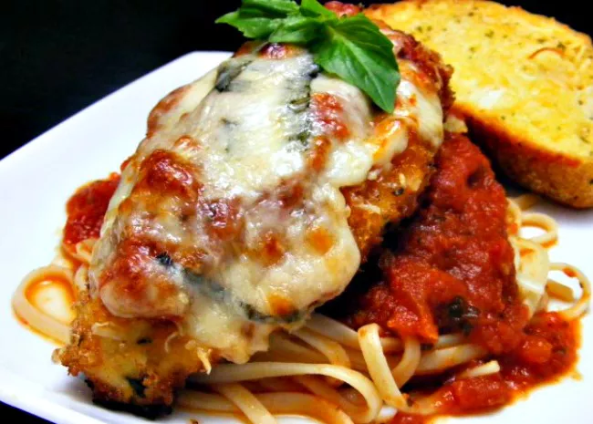

Impossible chicken parm

Description
Made from plants, Impossible meats are vegitarian and vegan friendly!
This recipe is both quick and tasty
Also, the chicken is not chicken, and is not served with pasta even if it's in the picture.
Ingredients
- Impossible Chicken Nuggets
- cheese
- tomato sauce
- Make sure the chicken is not chicken, and is not meat
- Throw the Impossible Chicken Nuggets in microwave oven for 2 minutes.
- Flip nuggets, cover in tomato sauce and cheese, place back in microwave
- Continue microwaving another minute, or until cheese is melted and sauce is warm but not exploding all over the inside of the microwave.
Return to home page